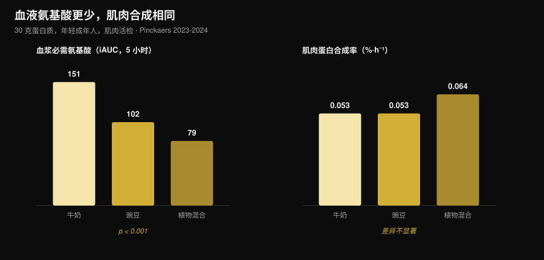
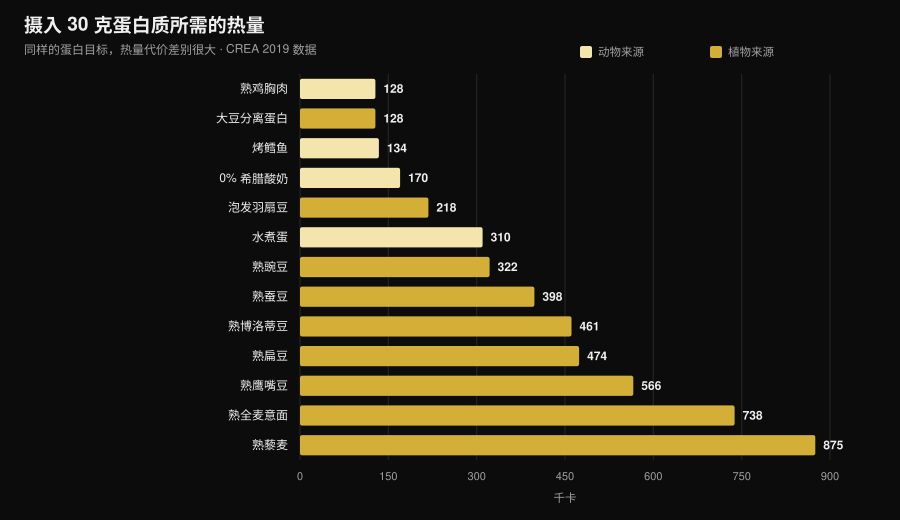

植物蛋白还是动物蛋白更适合增肌？
"植物蛋白不完全，长不了肌肉。"这是健身房里最常听到的一句话，背后的机制听上去也站得住脚：亮氨酸少，肌肉蛋白合成就少。后来真的有人去测了，用肌肉活检，结果和你想的不一样。但还有第二个数字几乎没人提，而选择恰恰在那里才变得具体。

要点速览
- 五项肌肉活检研究，五次打平。 30 克来自豌豆、小麦、玉米、马铃薯或植物混合蛋白的蛋白质，产生的肌肉蛋白合成率与 30 克牛奶蛋白相同（马斯特里赫特团队，2021-2024）。
- "需要更多亮氨酸"的机制经不起检验。 使用植物混合蛋白时，血液中的必需氨基酸几乎只有一半（iAUC 79 对 151），而合成率完全相同。
- 长期同样如此。 四项为期 10 至 16 周、针对纯素者、素食女性和植物混合蛋白的研究，在肌肉量、肌肉厚度和力量上均未发现差异。
- 最大的荟萃分析确实看到动物蛋白的小幅优势（肌肉量 SMD −0.20），但它来自非大豆类植物来源和全植物饮食，而不是"大豆对牛奶"的比较。
- 真正的代价是热量。 要摄入 30 克蛋白质，需要 99 克熟鸡胸肉、128 千卡，或者 435 克熟扁豆、474 千卡（CREA 食物成分表）。接近四倍。
疑问从哪里来
蛋白质不是一整块，而是一条氨基酸链，其中九种人体无法自行合成（必需氨基酸）。其中的亮氨酸像一个开关：血中浓度超过某个水平，就会启动合成肌肉蛋白的机制。
植物来源平均每克含有的亮氨酸和必需氨基酸都少于肉、蛋、鱼和乳制品，而且有些消化率略低。于是得出一个看似合理的结论：亮氨酸少 → 合成少 → 肌肉少。
推理本身没错。问题是，正确的推理不等于结果，必须拿去测量。
真正做了测量的实验
2021 到 2024 年间，马斯特里赫特大学 Luc van Loon 团队发表了五项随机双盲研究，设计一致：年轻成年人，输注标记苯丙氨酸，5 小时内多次肌肉活检，30 克植物蛋白对 30 克牛奶蛋白。
| 受试植物蛋白 | 植物组合成率 | 牛奶 | 结果 |
|---|---|---|---|
| 小麦（Pinckaers 2021） | 0.056 %·h⁻¹ | 0.053 %·h⁻¹ | p = 0.56 |
| 马铃薯（Pinckaers 2022） | 0.053 %·h⁻¹ | 0.050 %·h⁻¹ | p = 0.54 |
| 小麦+玉米+豌豆混合（Pinckaers 2023） | 0.064 %·h⁻¹ | 0.053 %·h⁻¹ | p = 0.08 |
| 豌豆（Pinckaers 2024） | 0.053 %·h⁻¹ | 0.053 %·h⁻¹ | p = 0.96 |
| 玉米（Pinckaers 2024） | 0.053 %·h⁻¹ | 0.053 %·h⁻¹ | p = 0.90 |
五种不同的植物来源，五次打平。而在马铃薯那项研究里，还测了一次力量训练之后的情况：0.069 对 0.064 %·h⁻¹，马铃薯略高，p = 0.52。即使在训练者最关心的条件下，也没有差别。

这张图展示了瓦解该机制的数据。餐后 5 小时进入血液的必需氨基酸（iAUC）：牛奶 151 mmol·300 min·L⁻¹，豌豆 102，植物混合蛋白 79——差距巨大且非常稳健（两项比较均 p < 0.001）。但肌肉合成率纹丝不动。
换句话说：在 30 克蛋白质这个量上，阈值已经全部跨过。"亮氨酸峰值"在剂量小的时候才重要；到了真实的一餐分量，它不再决定结果。
那几个月下来呢？
5 小时内测到的合成率是线索，不是结果。肌肉要用几个月来看。这方面有四项研究，应该放在一起读。
纯素者对杂食者，12 周（Hevia-Larraín 2021，Sports Medicine）。19 名长期纯素者与 19 名杂食者，蛋白摄入统一提到每公斤 1.6 克／天，一组用大豆、一组用乳清，每周两次有人监督的训练。腿部瘦体重两组都 +1.2 公斤；股直肌横截面积 +1.0 对 +0.9 cm²；腿举 1RM +97 对 +117 公斤。所有指标均无显著差异。
高蛋白纯素饮食，10 周（Monteyne 2023，Journal of Nutrition）。大容量方案，每周 5 练，约 2 克/公斤。瘦体重杂食组 +2.6 公斤、纯素组 +3.1 公斤；大腿肌肉体积两组均 +8.3%；肌纤维横截面积 +33% 对 +32%。
植物混合蛋白对乳清，12 周（Santini 2025，JISSN）。44 名未训练的年轻男性，每天 45 克补充蛋白分三餐摄入。全身瘦体重 +2.4 对 +2.5 公斤，股外侧肌横截面积 +0.9 对 +1.3 cm²，腿举 1RM +64 对 +63 公斤。组间差异均不显著。
严格素食女性，16 周（Martini 2026，Scandinavian Journal of Medicine & Science in Sports）。25 名素食者与 20 名非素食者，每周两练，不使用补剂。大腿肌肉厚度由 81.2 增至 85.6 毫米，对照由 80.8 增至 87.3 毫米；综合最大力量由 106.9 增至 132.6 公斤，对照由 107.9 增至 133.1 公斤。组间无差异——而素食组吃的蛋白质其实更少：1.0 对 1.3 克/公斤（p = 0.002）。
最后这个结果既最有意思，也最脆弱：这是一项非随机研究（没人靠抽签成为素食者），对象是未训练女性，因此不能据此断言 1 克/公斤对刻苦训练的人也够用。
为什么荟萃分析说法略有不同
规模最大的系统综述（Reid-McCann 2025，Nutrition Reviews，43 项随机试验，30 项纳入合并）发现，与动物蛋白相比，植物蛋白留下的肌肉量更少：SMD −0.20（95% CI −0.37 / −0.03；p = 0.02），效应集中在 60 岁以下，60 岁以上不存在。
但同一分析拆开来看，差异的位置其实很明确：
- 大豆对牛奶蛋白：无差异（SMD −0.02；CI −0.20 / 0.16；p = 0.80），17 项试验；
- 动物蛋白对非大豆类植物蛋白（大米、奇亚、燕麦、马铃薯）：−0.58（CI −1.06 / −0.09），5 项试验；
- 动物蛋白对全植物饮食：−0.51（CI −0.91 / −0.11），7 项试验；
- 肌肉力量：无差异（14 项试验）。体能表现：无差异（5 项试验）。
更早的荟萃分析（Lim 2021，Nutrients，16 项试验）落点一致：来源对绝对瘦体重和力量没有影响，动物蛋白在瘦体重百分比上有小幅优势，50 岁以下人群 +0.41 公斤（CI 0.08-0.74）。
诚实的解读是：差异存在，但很小，只涉及肌肉量而非力量，并且在两种优质分离蛋白之间的比较中消失。它重新出现的地方是全植物饮食模式——也就是说，问题不再是蛋白质质量，而是实际能吃进去多少。
真正的问题：热量账
我取用 CREA 食物成分表，算了一下要达到 30 克蛋白质——上述所有研究使用的分量——需要吃多少食物、附带多少热量。

| 食物（食用状态） | 达到 30 克蛋白所需重量 | 千卡 | 膳食纤维 |
|---|---|---|---|
| 熟鸡胸肉 | 99 克 | 128 | 0 克 |
| 大豆分离蛋白 | 35 克 | 128 | 0 克 |
| 烤鳕鱼 | 171 克 | 134 | 0 克 |
| 0% 希腊酸奶 | 333 克 | 170 | 0 克 |
| 泡发羽扇豆 | 183 克 | 218 | 5 克 |
| 水煮蛋（约 5 个） | 242 克 | 310 | 0 克 |
| 熟豌豆 | 309 克 | 322 | 20 克 |
| 去皮熟蚕豆 | 273 克 | 398 | 8 克 |
| 熟博洛蒂豆 | 435 克 | 461 | 30 克 |
| 熟扁豆 | 435 克 | 474 | 36 克 |
| 熟鹰嘴豆 | 429 克 | 566 | 25 克 |
| 熟全麦意面 | 405 克 | 738 | 14 克 |
| 熟藜麦 | 625 克 | 875 | 23 克 |
一顿 30 克蛋白质的饭，用鸡肉花 128 千卡，用扁豆花 474 千卡。一天三顿，差距超过 1,000 千卡：减脂期根本做不到，即便维持期也会把碳水额度占满。
还有体积问题：435 克熟扁豆是满满两盘，同时带来 36 克膳食纤维，一顿就超过日常推荐量的两倍。这不是健康问题，是胃容量和安排的问题。
有两个例外值得注意，而且正好和研究结果呼应。大豆分离蛋白每 30 克蛋白只要 128 千卡，和熟鸡胸肉完全一样：它恰恰是荟萃分析中从未输给牛奶蛋白的那种植物蛋白。而羽扇豆为 218 千卡，是表中最好的天然植物食物。
如果你是在热量缺口下安排蛋白质，道理和我们讲减脂期需要多少蛋白质时一样：克数不变，变的是随之而来的东西。
研究到底怎么说
—"植物蛋白不像动物蛋白那样启动肌肉合成"。 五项活检研究、五次打平：小麦 p = 0.56，马铃薯 p = 0.54，豌豆 p = 0.96，玉米 p = 0.90，混合蛋白 p = 0.08（植物组更高）。
—"亮氨酸不够就长不了肌肉"。 植物混合蛋白组血液必需氨基酸低 48%（79 对 151 iAUC，p < 0.001），合成率却相同。
—"素食或纯素就练不出来"。 四项 10 至 16 周的研究，在肌肉量、厚度、横截面积和力量上都没有差异。
—"来源完全不重要"。 最大的荟萃分析在肌肉量上给出 SMD −0.20，不利于植物蛋白，集中于 60 岁以下。很小，但不是零。
—"多吃点植物蛋白就行"。 纸面上成立；到了餐盘上，这些蛋白质要带来 3 至 4 倍的热量和多得多的纤维。
—"大豆蛋白扛得住与牛奶的比较"。 17 项随机试验，SMD −0.02（CI −0.20 / 0.16），与零无法区分。
—"大豆会降低男性睾酮"。 41 项临床研究的荟萃分析，在 1,753 名男性中测量总睾酮：无论剂量和时长，对总睾酮、游离睾酮、雌二醇、雌酮和 SHBG 均无影响（Reed 2021）。
—"每餐都要谷物和豆类搭配"。 在马斯特里赫特的研究中，单一植物来源不作任何搭配就与牛奶打平；但没有研究直接比较过"每餐搭配"与"全天搭配"对肌肉增长的影响。
怎么落地
- 看每天的总量，不看来源。 所有打平的研究都是在每公斤体重 1.6-2 克／天的水平上。
- 植物来源要提高单餐剂量。 研究用的是每份 30 克真实蛋白，不是 15-20 克。
- 以大豆和羽扇豆为主。 它们是每克蛋白热量代价最低的两种植物来源。
- 把附带的热量算进去。 如果一餐植物蛋白要 400 千卡而不是 130，就得从别处扣回来。
- 纤维要慢慢加。 一周内从 15 克加到 35 克是有代价的：逐步增加，把豆类分散到多餐。
- 总量仍然不够就用补剂。 大豆分离蛋白或大豆-豌豆混合：研究中每天 45 克与乳清效果相当。
- 要盯的是 B12 和铁，不是蛋白质。 在没有动物性食物的饮食里，这才是需要和医生一起监测的指标。
试试 Nurvan —— 基于 CREA 数据库计算蛋白质
这篇文章的核心是：只看蛋白克数不够，关键是随之而来的热量和体积。Nurvan 的营养模块建立在官方 CREA 食物成分表上，所以当你记录 200 克熟扁豆时，看到的是这种食物真实的蛋白质、热量和纤维，而不是网络平均值。你以 g/kg 设定蛋白目标，应用会显示你离目标还有多远、达到它要付出多少热量；旁边是训练重量、RIR 和围度数据，让你看出这些蛋白质有没有真的变成肌肉。试试 Nurvan。
常见问题
植物蛋白增肌效果和动物蛋白一样吗？
在摄入量相同的前提下，是的。五项随机肌肉活检研究显示，30 克小麦、马铃薯、豌豆、玉米或植物混合蛋白与 30 克牛奶蛋白产生相同的合成率；四项 10 至 16 周的研究在肌肉量和力量上也没有差异。
素食或纯素饮食每天需要多少蛋白质？
那些结果与杂食者相同的研究使用的是每公斤体重 1.6-2 克／天。一项针对训练水平较低的素食女性的研究，即便在 1.0 克/公斤下也没发现差异，但那只是每周两练的情况。
必须在同一餐里搭配谷物和豆类吗？
就肌肉合成而言似乎不必：在马斯特里赫特的研究中，单一植物来源达到 30 克即可与牛奶打平。全天变换来源仍然是好习惯。
大豆蛋白会降低睾酮吗？
不会。最新的荟萃分析汇总了 41 项临床研究，在 1,753 名男性中测量总睾酮，未发现对睾酮、雌二醇、雌酮或 SHBG 的影响。
延伸阅读
- 减脂期到底需要多少蛋白质——热量有限时的蛋白配额。
- 受伤时该怎么吃——停训几周里的蛋白质与热量。
- 身体重组：减脂同时增肌——蛋白质与热量缺口如何配合。
参考文献
- Pinckaers PJM, Kouw IWK, Hendriks FK, et al., 2021. No differences in muscle protein synthesis rates following ingestion of wheat protein, milk protein, and their protein blend in healthy, young males. British Journal of Nutrition 126(12):1832-1842. PMID 33597056 · DOI 10.1017/S0007114521000635
- Pinckaers PJM, Hendriks FK, Hermans WJH, et al., 2022. Potato Protein Ingestion Increases Muscle Protein Synthesis Rates at Rest and during Recovery from Exercise in Humans. Medicine & Science in Sports & Exercise 54(9):1572-1581. PMID 35438672 · DOI 10.1249/MSS.0000000000002937
- Pinckaers PJM, Kouw IWK, Gorissen SHM, et al., 2023. The Muscle Protein Synthetic Response to the Ingestion of a Plant-Derived Protein Blend Does Not Differ from an Equivalent Amount of Milk Protein in Healthy Young Males. The Journal of Nutrition 152(12):2734-2743. PMID 36170964 · DOI 10.1093/jn/nxac222
- Pinckaers PJM, Smeets JSJ, Kouw IWK, et al., 2024. Post-prandial muscle protein synthesis rates following the ingestion of pea-derived protein do not differ from ingesting an equivalent amount of milk-derived protein in healthy, young males. European Journal of Nutrition 63(3):893-904. PMID 38228945 · DOI 10.1007/s00394-023-03295-6
- Pinckaers PJM, Weijzen MEG, Houben LHP, et al., 2024. The muscle protein synthetic response following corn protein ingestion does not differ from milk protein in healthy, young adults. Amino Acids 56(1):8. PMID 38315260 · DOI 10.1007/s00726-023-03377-z
- Hevia-Larraín V, Gualano B, Longobardi I, et al., 2021. High-Protein Plant-Based Diet Versus a Protein-Matched Omnivorous Diet to Support Resistance Training Adaptations: A Comparison Between Habitual Vegans and Omnivores. Sports Medicine 51(6):1317-1330. PMID 33599941 · DOI 10.1007/s40279-021-01434-9
- Monteyne AJ, Coelho MOC, Murton AJ, et al., 2023. Vegan and Omnivorous High Protein Diets Support Comparable Daily Myofibrillar Protein Synthesis Rates and Skeletal Muscle Hypertrophy in Young Adults. The Journal of Nutrition 153(6):1680-1695. PMID 36822394 · DOI 10.1016/j.tjnut.2023.02.023
- Santini MH, Erwig Leitão A, Mazzolani BC, et al., 2025. Similar effects between animal-based and plant-based protein blend as complementary dietary protein on muscle adaptations to resistance training: findings from a randomized clinical trial. Journal of the International Society of Sports Nutrition 22(1):2568047. PMID 41059835 · DOI 10.1080/15502783.2025.2568047
- Martini GL, Schemes MB, Strey B, et al., 2026. No Differences in Muscular Adaptations to Long-Term Resistance Training Between Young Strict Vegetarian and Non-Vegetarian Women. Scandinavian Journal of Medicine & Science in Sports 36(2):e70224. PMID 41684167 · DOI 10.1111/sms.70224
- Reid-McCann RJ, Brennan SF, Ward NA, et al., 2025. Effect of Plant Versus Animal Protein on Muscle Mass, Strength, Physical Performance, and Sarcopenia: A Systematic Review and Meta-analysis of Randomized Controlled Trials. Nutrition Reviews 83(7):e1581-e1603. PMID 39813010 · DOI 10.1093/nutrit/nuae200
- Lim MT, Pan BJ, Toh DWK, et al., 2021. Animal Protein versus Plant Protein in Supporting Lean Mass and Muscle Strength: A Systematic Review and Meta-Analysis of Randomized Controlled Trials. Nutrients 13(2):661. PMID 33670701 · DOI 10.3390/nu13020661
- Reed KE, Camargo J, Hamilton-Reeves J, et al., 2021. Neither soy nor isoflavone intake affects male reproductive hormones: An expanded and updated meta-analysis of clinical studies. Reproductive Toxicology 100:60-67. PMID 33383165 · DOI 10.1016/j.reprotox.2020.12.019
食物成分数据：CREA——意大利食品与营养研究中心，食物成分表，2019 年更新版（alimentinutrizione.it）。科学文献通过 PubMed 检索获得。
本文的趋势来源：2026 年 10 月，两项被广泛报道的植物／动物蛋白对比研究相隔数日发表（Martini 2026 与 Santini 2025），同时围绕身体重组与植物蛋白的搜索需求持续上升（Exploding Topics，数据截至 2026 年 10 月 17 日）。
Giammaria Loi 是 Nurvan 的创始人。他自 2012 年开始进行力量训练，2013 年起担任 FIPE 认证私人教练，2018 年起参加全国级力量举比赛。他署名的每篇文章都从科学研究出发，落到健身房里真正管用的做法。
注：本文为科普内容，不能替代医生或专业人士的意见。如果你采用不含动物性食物的饮食，请与医生讨论维生素 B12、铁和维生素 D 的监测。